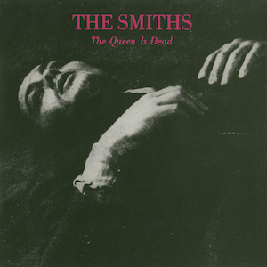

About the Album
"The Queen Is Dead" is the third studio album by The Smiths, released in 1986. Pairing Johnny Marr's shimmering, jangling guitars with Morrissey's witty and melancholic lyrics, it swings from biting satire of the British establishment to tender songs about loneliness and longing. Frequently ranked among the greatest albums ever made, it remains a cornerstone of indie and alternative rock.
Tracklist
- The Queen Is Dead
- Frankly, Mr. Shankly
- I Know It's Over
- Never Had No One Ever
- Cemetry Gates
- Bigmouth Strikes Again
- The Boy with the Thorn in His Side
- Vicar in a Tutu
- There Is a Light That Never Goes Out
- Some Girls Are Bigger Than Others